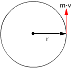
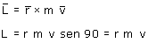
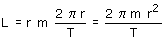

 |
El momento angular es el momento respecto a O del momento lineal  |
El momento angular de un planeta es proporcional a su velocidad areolar
Sustituyendo la velocidad orbital del planeta en la expresión del momento angular:

π·r2 es el área que barre el vector de posición del planeta en un año y T es la duración del año, enton-ces (π·r2 / T) es la velocidad areolar del planeta (vA)
L = 2·m·vA
|
|